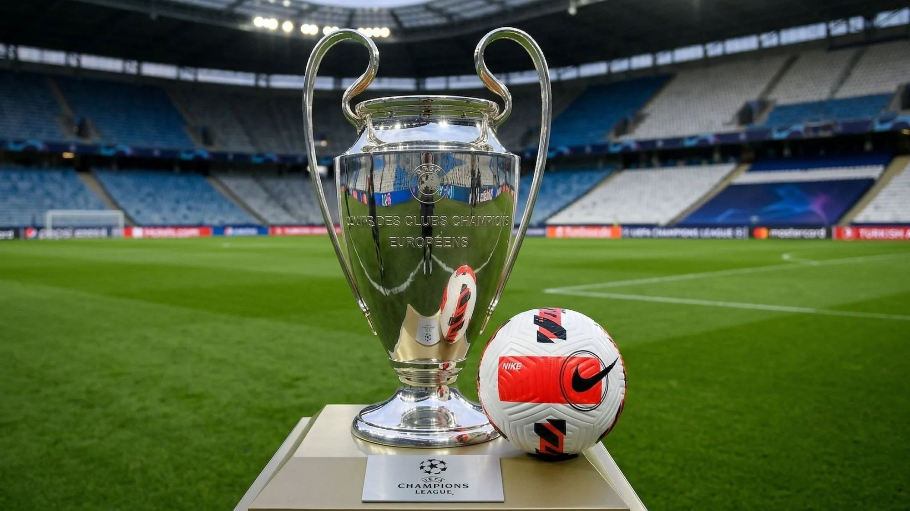

Why the most filmed object in European football may be the sport's most underestimated brand asset

Nike is not buying a ball.
It is buying the most filmed object in European football.
The brand has entered exclusive negotiations with UC3 to become the official supplier of match balls for the Champions League, Europa League, and Conference League between 2027 and 2031. adidas, which has held that space since 2001, has already confirmed that it will not renew. The new deal could be worth more than €40 million per year.
At first glance, it seems like a detail.
A Morningstar analyst summed up the most obvious reaction well: he never looked at the logo on a ball and thought he needed to buy new sneakers.
But that is exactly where the story gets interesting.
Because the ball may be the most underestimated brand asset in football.
It does not have the glamour of a kit.
It does not have the face of a player.
It does not create lines outside a store.
But it is in every pass, every shot, every goal, every replay.
It is the visual center of the game.
And that matters even more at a time when Nike has lost ground to PUMA Group in domestic leagues: the Premier League, Lega Serie A, and LALIGA.
In other words: while Puma gained horizontal presence in domestic competitions, Nike is trying to recover vertical visibility at the highest point of the pyramid.
This is not a cultural play.
It is an omnipresence play.
That is 531 matches per season across the three competitions.
531 times in which the swoosh is the brand closest to the action.
Nike is not buying an asset that persuades.
It is buying an asset that appears.
And in football, appearing at the center of the action hundreds of times per season is still a form of power that almost nobody talks about.
If you could choose a single visibility asset in football, which would you choose: the shirt, the player, or the ball?